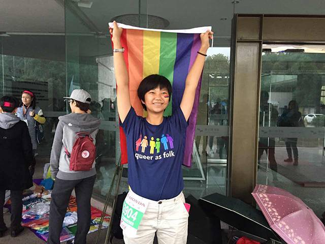
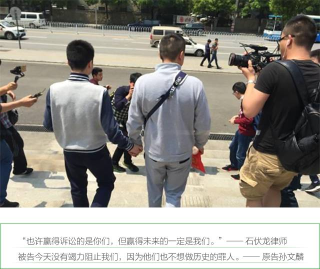
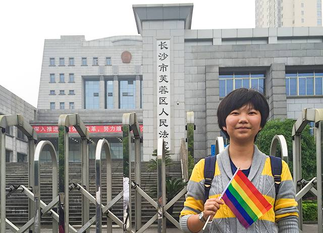

同性婚姻第一案宣判，论坛小伙伴带来亲历分享！


4月13日，全国“同性恋婚姻维权第一案”在湖南长沙芙蓉区人民法院开庭审理，原告孙文麟和同性恋人胡明亮双双出庭，被告长沙芙蓉区民政局则由副局长黄天明出庭，包括媒体记者在内的近200人参加了旁听。
我们的小伙伴阿园也在芙蓉区人民法院亲历了这一场意义非凡的庭审，下面是她从现场带来的第一手信息和一些独特的视角。

开庭前
八点法院开门，九点本案正式开庭。
七点半时现场已有60余人排队等候。
开庭前孙文麟和胡明亮给在场的旁听人员以及被告和被告代理律师发了喜糖。
审理中
➊ 开庭核对原告被告身份。
➋ 被告律师解释案子从一月份延期到了现在，是因为被告代理律师在外地有其他无法申请延期的案子。被告到场的民政局法人代表是民政局副局长，在此案立案后，他由分管退伍军人抚恤的职位调动到了分管婚姻登记的职位上。
➌ 双方就对方提供的证据进行质证。
➍ 被告提供《关于孙文麟两名同性要求登记结婚的说明》，即当时接待孙文麟和胡明亮的民政局婚姻登记处主任何建平的证言。而原告的代理律师认为，何建平无法出庭作证，所以他的证言无法单独作为定案证据。
➎ 提供《结婚登记审查处理表》，这份文件的归档时间是2016年1月，而本案发生在2015年6月，所以石伏龙律师质疑这份文件是民政局在立案后随意起草归档的，与本案没有关联。
➏ 原告提供录音材料，并现场播放，内容是：原告在提出向政府要求信息公开后，民政局不予回应，原告因此向民政局致电询问缘由。双方就此开始辩论。
➐ 争论的焦点主要在于，原告认为婚姻法和任何一部法律都没有禁止同性婚姻，所以同性人群有权等级结婚。被告认为婚姻法第二条、第八条等条款都提到了“一男一女”、“一夫一妻”、“男女双方”，所以法律只允许异性结婚，民政局是依法行政。孙文麟认为“一夫一妻”是针对“一夫多妻”和“一妻多夫”而言，他与胡明亮也能是“夫妻”，并且这些婚姻法的条款只是承认异性婚姻合法，并未提及同性婚姻不合法。

➑ 辩论结束，双方做最后陈述。
被告在陈述中重申民政局是依法行政，不存在违法行为，婚姻法只允许一男一女的异性婚姻。
休庭15分钟。
➒ 15分钟后审判长当庭宣判：驳回原告的诉讼请求：1.被告给孙文麟和胡明亮办理结婚登记手续。2.被告承担诉讼费。
至此，中国同性婚姻第一案败诉，孙文麟和胡明亮需要支付50元诉讼费。


➊ 阿圆举着彩虹旗，手持婚姻法，接受了媒体的采访。
Q：为什么要拿着婚姻法
A：希望婚姻法可以保障同性恋人群的权益，并将其中“夫妻”、“男女双方”的限制性词汇修改为为“配偶”、“性别不限”。
➋ 许多人赶赴芙蓉区人民法院声援原告、见证历史，其中包括长沙女子学院的一些教授女性学的老师、女子学院的同学和自愿参与声援的社会人士。
➌ 辩论中的精彩环节
（1）“中华人民共和国婚姻法保障的是中华人民共和国人民的权利，中国人民共和国的人民不止异性恋，还有同性恋、双性恋和跨性别。”——孙文麟
（2）原告质问被告是否歧视同性恋，被告以“这与本案无关”为由拒绝回答。

判决是这对情侣的失败，但对于同性恋维权是巨大的一步。（建建）
跨性别修改身份证后能否与异性结婚？（欧文）
败诉是某种意义上的必然，但是诉讼的意义不在于结果。（睾丸酮爆表的阿尔法大猩猩）
更多人在基层发起的诉讼会形成全国性的压力。（欧文）
不同于秋白以“信息公开逾期不回复”为由进行起诉，本案直接起诉民政局婚姻登记的不当行政行为。（阿园）

中国同性婚姻第一案败诉 原告称会上诉